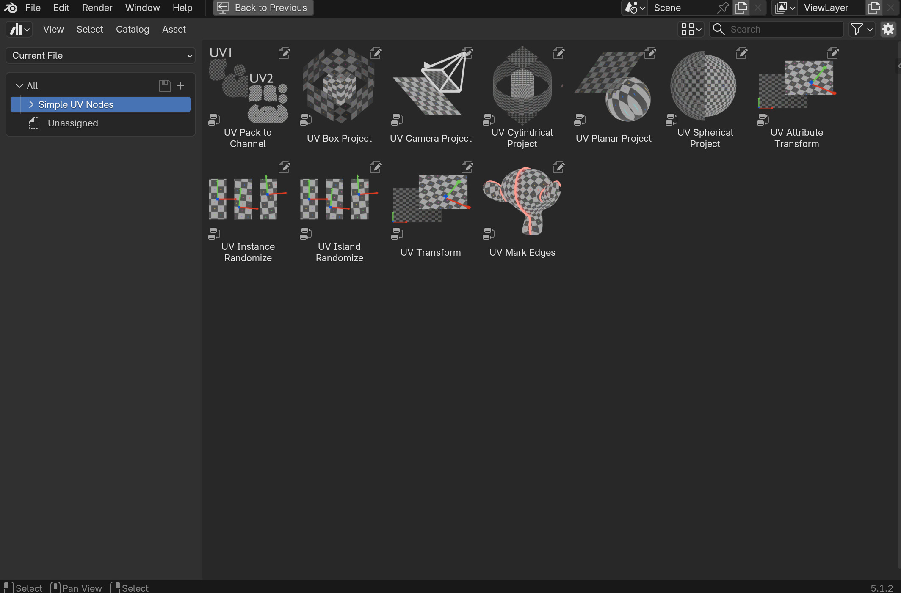
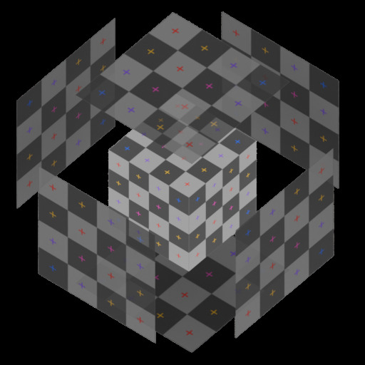
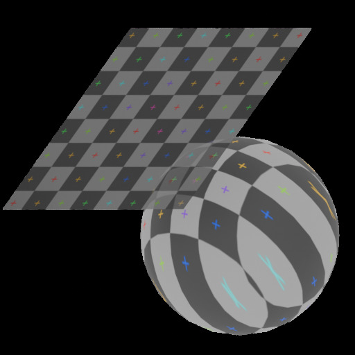
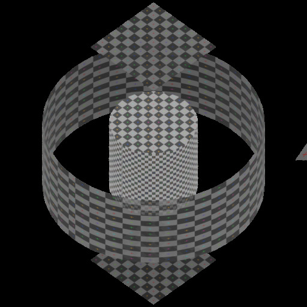
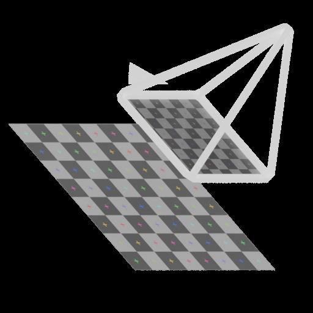
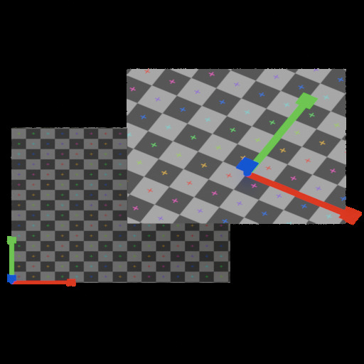
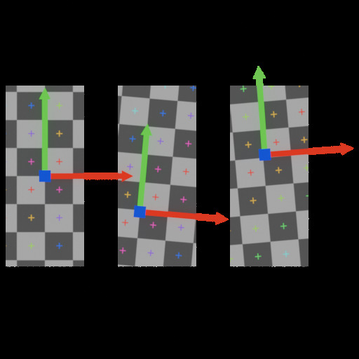
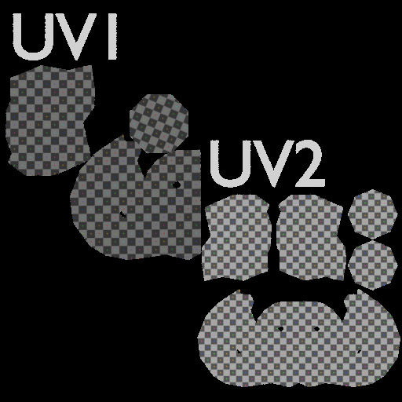

Simple UV Nodes
A Geometry Nodes library that lets you create, project, and transform UV maps directly in the node editor — no UV unwrapping, no separate operator, no context switch. Drag a node from the Asset Browser into your modifier tree and your UVs are live and non-destructive.
Every node writes to a named UV attribute, plays nicely with Blender's native material system, and stacks with the rest of your geometry node setup.
Minimum Blender version: 4.5

Feature Overview
- Box / Triplanar Projection: Project UVs from all three axes simultaneously. Per-axis offset, rotation, and scale give you full control over seam placement.
- Planar Projection: Flat projection along a chosen axis — ideal for floors, walls, and surfaces with a clear dominant direction.
- Spherical Projection: Equirectangular UV projection for round objects. Seam-corrected across all three axis orientations, with a choice between normalised (0–1) and real-world scale output.
- Cylindrical Projection: Wraps UVs around a chosen axis, with an optional blended cap projection on end faces — ideal for pipes, columns, and other surfaces of revolution.
- Camera Projection: Perspective-correct UV projection from the point of view of a camera or any other object — ideal for decals and baked projection setups.
- UV Transform: Non-destructively offset, rotate, scale, tile, and mirror an existing UV map without re-projecting from scratch.
- UV Attribute Transform: A lightweight helper designed for use inside Geometry Node setups — pass it a UV vector and get back a transformed result, without needing a Geometry socket.
- Named UV attributes: Every node targets a user-specified UV attribute name, so you can create and manage multiple UV maps on the same mesh.
- Object or World space: Choose the coordinate space for projections to keep UVs stable under object transforms or locked to the world.
- Asset Browser integration: Nodes are registered as Blender assets — drag any node directly into your modifier tree, no extra steps.
- UV Instance Randomize: Per-instance UV randomization for scattered geometry — each instance receives an independent random offset, rotation, and scale driven by its instance ID for stable, seed-controlled variation.
- UV Island Randomize: The same randomization, scoped to UV islands within a single mesh — breaks up visible texture tiling on rock piles, brick walls, and other complex surfaces.
- UV Mark Edges: Detects UV island boundaries from a named UV attribute and writes them to the mesh as seams and/or sharp edges — useful for baking, shading, and post-projection workflows.
- UV Pack to Channel: Packs UV islands from a source UV map into a destination UV map, with control over margin, rotation, and packing method. Ideal for generating lightmap UVs from an existing layout.
- Stackable: Project with UV Box Project or UV Planar Project, then pipe the result into UV Transform for additional adjustments — without losing the original projection.
- Pure Geometry Nodes: No Python dependency, no operator to run — everything is a standard Geometry Nodes modifier.
Installation
- Download the release zip and extract it.
- Inside you will find version folders — pick the one that matches your Blender installation (e.g.
Simple_UV_Nodes_4_5orSimple_UV_Nodes_5_1). - In Blender, open Edit → Preferences → File Paths → Asset Libraries and add the version folder as a new Asset Library.
- Open the Asset Browser (e.g. in a Geometry Nodes editor header), set the library to Simple UV Nodes, and drag any node into your Geometry Nodes modifier tree.
Tip
If you update Blender to a new minor version, swap the registered folder to the matching one from the zip. Older folders continue to work but will not include features introduced in newer Blender versions.
Node Reference
UV Box Project
Box/triplanar projection onto geometry. Projects UVs from three axes simultaneously and writes the result into a named UV attribute.

| Input | Type | Default | Description |
|---|---|---|---|
| UV Map | String | UVMap |
Name of the UV attribute to write |
| Coordinates | Menu | Object | Coordinate space: Object or World |
| Tiling | Float | 1.0 |
Uniform tiling multiplier |
| X Projection | |||
| Offset | Vector | 0, 0, 0 |
Translation offset for the X-face UV |
| Rotate | Float | 0° |
Rotation for the X-face UV |
| Scale | Vector | 1, 1 |
Scale for the X-face UV |
| Y Projection | |||
| Offset | Vector | 0, 0, 0 |
Translation offset for the Y-face UV |
| Rotate | Float | 0° |
Rotation for the Y-face UV |
| Scale | Vector | 1, 1 |
Scale for the Y-face UV |
| Z Projection | |||
| Offset | Vector | 0, 0, 0 |
Translation offset for the Z-face UV |
| Rotate | Float | 0° |
Rotation for the Z-face UV |
| Scale | Vector | 1, 1 |
Scale for the Z-face UV |
UV Planar Project
Flat projection of UVs along a single chosen axis. Useful for walls, floors, or any surface that is predominantly facing one direction.

| Input | Type | Default | Description |
|---|---|---|---|
| UV Map | String | UVMap |
Name of the UV attribute to write |
| Coordinates | Menu | Object | Coordinate space: Object or World |
| Projection Plane | Menu | Z | Axis to project along: X, Y, or Z |
| Transform | |||
| Offset | Vector | 0, 0, 0 |
Translation offset applied to the UV |
| Rotate | Float | 0° |
Rotation applied to the UV |
| Tiling | Float | 1.0 |
Uniform tiling multiplier |
| Scale | Vector | 1, 1 |
Scale applied to the UV |
UV Spherical Project
Equirectangular UV projection that wraps UVs around a sphere. Use this for round objects — planets, eyeballs, fruits — where a planar or box projection would produce visible distortion. The node uses face-domain seam correction to eliminate the discontinuity where the left and right edges of the UV meet.

| Input | Type | Default | Description |
|---|---|---|---|
| UV Map | String | UVMap |
Name of the UV attribute to write |
| UV Scale | Menu | Normalized |
Normalized: maps the full sphere surface to the 0–1 UV square. Real World Scale: UV is in Blender units (arc length), centred at 0.5 |
| Axis | Menu | Z |
Pole axis of the sphere. Z places poles at top and bottom; X and Y rotate the sphere orientation |
| Tiling | Float | 1.0 |
Uniform tiling multiplier. Values above 1 repeat the texture |
| Offset | Vector | 0, 0, 0 |
UV translation offset. X shifts horizontally, Y shifts vertically |
| Rotate | Float | 0° |
UV rotation angle, pivoted at the centre of UV space |
| Scale | Vector | 1, 1 |
UV scale applied from the centre of UV space. X scales horizontally, Y scales vertically |
Tip
Real World Scale keeps UV proportions consistent with the actual surface area of the sphere. Use it when tiling at a consistent texel density matters — for example, to match a spherical projection to a neighbouring planar projection on the same object.
UV Cylindrical Project
Wraps UVs around a chosen axis. U follows the circumference, V follows the height along the axis — ideal for pipes, columns, tree trunks, bottles, and other surfaces of revolution. An optional cap mode blends in a planar projection on end faces, based on how closely a face's normal points along the axis.

| Input | Type | Default | Description |
|---|---|---|---|
| UV Map | String | UVMap |
Name of the UV attribute to write |
| UV Scale | Menu | Normalized |
Normalized: maps the full circumference/height to the 0–1 UV square. Real World Scale: UV is in Blender units |
| Axis | Menu | Z |
Cylinder axis: X, Y, or Z |
| Tiling | Float | 1.0 |
Uniform tiling multiplier |
| Offset | Vector | 0, 0 |
UV translation offset |
| Rotate | Float | 0° |
Rotation around the axis — shifts the seam position |
| Scale | Vector | 1, 1 |
Non-uniform UV scale |
| Caps | |||
| Enable Caps | Boolean | false |
Activates a blended planar projection on end faces |
| Cap Blend Angle | Float | 30° |
Face-normal angle below which a face is treated as a cap |
| Cap Scale | Vector | 1, 1 |
Scale applied to the cap planar projection |
| Cap Offset | Vector | 0, 0 |
Offset applied to the cap planar projection |
| Cap Rotate | Float | 0° |
Rotation applied to the cap planar projection |
Tip
Use Rotate to spin the seam to a hidden edge — the back of a column, the underside of a pipe — before locking in the rest of the projection.
UV Camera Project
Projects UVs from the point of view of a camera or any other object, computing a perspective-correct projection the same way a real camera lens would. Point the projector object at the surface and the texture appears painted on from that angle — ideal for decals and baked projection setups.

| Input | Type | Default | Description |
|---|---|---|---|
| UV Map | String | UVMap |
Name of the UV attribute to write |
| Camera | Object | — | Object whose position and orientation define the projector |
| Focal Length | Float | 50.0 |
Projector focal length in millimetres — controls field of view |
| Sensor Width | Float | 36.0 |
Projector sensor width in millimetres — paired with Focal Length to define the field of view |
| Resolution X | Integer | 1920 |
Horizontal resolution used to compute the UV aspect ratio |
| Resolution Y | Integer | 1080 |
Vertical resolution used to compute the UV aspect ratio |
| Tiling | Float | 1.0 |
Uniform tiling multiplier |
| Offset | Vector | 0, 0 |
UV translation offset |
| Rotate | Float | 0° |
UV rotation |
| Scale | Vector | 1, 1 |
Non-uniform UV scale |
Tip
Because the projection reads the projector's live transform, animating or parenting the Camera object updates the UVs in real time. Add a Copy Location/Copy Rotation constraint if you want the projection to stay fixed once placed.
UV Transform
Modifies an existing UV map non-destructively — offset, rotate, scale, tile, and mirror without re-projecting from scratch.

| Input | Type | Default | Description |
|---|---|---|---|
| UV Map | String | UVMap |
Name of the UV attribute to modify |
| Offset UV | Vector | 0, 0 |
Translation offset |
| Rotate | Float | 0° |
Rotation |
| Scale | Vector | 1, 1 |
Scale |
| Tile | Float | 1.0 |
Uniform tiling multiplier |
| Mirror U | Boolean | false |
Mirror along the U axis |
| Mirror V | Boolean | false |
Mirror along the V axis |
UV Attribute Transform
A lightweight pure-vector node that offsets, rotates, and scales a UV coordinate value. Has no Geometry socket — use it as a helper sub-node inside other projection setups or to pre-process a UV vector before feeding it into a texture.
| Input | Type | Default | Description |
|---|---|---|---|
| UV Coordinates | Vector | 0, 0, 0 |
Input UV vector to transform |
| Offset | Vector | 0, 0 |
Translation offset |
| Rotate | Float | 0° |
Rotation angle |
| Scale | Vector | 1, 1 |
Scale |
| Output | Type | Description |
|---|---|---|
| Vector | Vector | Transformed UV vector |
UV Instance Randomize
Adds per-instance UV variation to scattered geometry. Each instance receives an independent random offset, rotation, and scale value derived from its instance ID, so the variation is stable — changing only when you change the seed. Use this after a Scatter or Instance on Points node to break up texture repetition. Instances are realized as part of this process.
Both scale and rotation pivot on the center of each UV island (0.5, 0.5 in UV space), so island position stays predictable regardless of scale.

| Input | Type | Default | Description |
|---|---|---|---|
| UV Map | String | UVMap |
Name of the UV attribute to read and write |
| Seed | Integer | 0 |
Global seed — change to get a different randomization pattern |
| Offset Variation | Vector | 0, 0, 0 |
Random UV shift range per axis. U shifts by a random value in [−X/2, +X/2], V shifts in [−Y/2, +Y/2]. Z is unused |
| Rotate Variation | Float | 0° |
Max random rotation in degrees. Each instance rotates by a random value in [−Var, +Var]. Range: −180° to 180° |
| Scale Variation | Float | 1.0 |
Scale spread. Each instance scales by 1 + random([−Var/2, +Var/2]). At the default of 1.0, instances range from 0.5× to 1.5× their UV island size |
Tip
Increase Offset Variation to spread instances across the texture. Set Rotate Variation to 180 for fully random orientations. Keep Scale Variation below 2 to avoid zero-sized islands; values above 2 can produce negative scale (UV flip).
UV Island Randomize
Adds per-island UV variation across a single mesh. Reads each UV island, derives a stable random seed from it, and applies an independent random offset, rotation, and scale to every face in that island — the same mechanism as UV Instance Randomize, but scoped to UV islands instead of geometry instances. Use it to break up visible texture tiling on complex meshes such as rock piles, brick walls, or cobblestones.
| Input | Type | Default | Description |
|---|---|---|---|
| UV Map | String | UVMap |
Name of the UV attribute to read and write |
| Seed | Integer | 0 |
Global seed — change to get a different randomization pattern |
| Offset Variation | Vector | 0, 0, 0 |
Random UV shift range per axis. U shifts by a random value in [−X/2, +X/2], V shifts in [−Y/2, +Y/2]. Z is unused |
| Rotate Variation | Float | 0° |
Max random rotation in degrees. Each island rotates by a random value in [−Var, +Var]. Range: −180° to 180° |
| Scale Variation | Float | 1.0 |
Scale spread. Each island scales by 1 + random([−Var/2, +Var/2]). At the default of 1.0, islands range from 0.5× to 1.5× their original size |
Tip
UV Island Randomize and UV Instance Randomize stack. Apply Instance Randomize first (unique base offset per instance), then Island Randomize on the realized mesh for further per-island variation.
UV Mark Edges
Reads a named UV attribute and marks every edge that lies on a UV island boundary as a seam, a sharp edge, or both. Run this after any projection node to keep your seams in sync with your UV layout — no manual marking needed.

| Input | Type | Default | Description |
|---|---|---|---|
| UV Map | String | UVMap |
Name of the UV attribute to read for boundary detection |
| Mark Seam | Boolean | true |
Write island boundaries to the uv_seam edge attribute (Blender 4.1+) |
| Mark Sharp | Boolean | true |
Write island boundaries to the sharp_edge edge attribute |
| Clear Seams | Boolean | false |
When enabled, replaces all existing seam marks; when disabled, ORs with existing marks |
| Clear Sharp | Boolean | false |
When enabled, replaces all existing sharp marks; when disabled, ORs with existing marks |
| UV Split Distance | Float | 0.001 |
Distance tolerance in UV space. Edges whose shared vertices differ by less than this value are treated as continuous. Raise slightly to compensate for floating-point drift after re-importing. |
Tip
Use Clear Seams / Clear Sharp together when you want this node to be the single source of truth for seam marks. Leave them off if you are layering seams from multiple sources.
UV Pack to Channel
Packs UV islands from a source UV map into a destination UV map. Suitable for lightmap baking, ambient occlusion maps, or any workflow requiring a dedicated non-overlapping UV alongside a tiling UV.

| Input | Type | Default | Description |
|---|---|---|---|
| UV In | String | UVMap |
Name of the source UV attribute to read islands from |
| Packed UV | String | UVMap |
Name of the destination UV attribute to write the packed layout into |
| Margin | Float | 0.02 |
Gap between islands in UV space (0–1) |
| Rotate | Boolean | true |
Allow islands to be rotated for a tighter fit |
| Method | Menu | Exact Shape |
(only for 5.0+) Packing algorithm: Exact Shape traces the actual island outline; Bounding Box & Convex Hull are faster but less precisse |
Tip
Packed UV defaults to the same name as UV In, so by default the packed layout overwrites your source UV map. Set Packed UV to a different attribute name if you want to keep the original projection untouched.
General Tips
UV Map name — The UV Map string socket must match the name of the UV attribute on your mesh exactly. Blender's default is UVMap. You can check the attribute name in the Object Data Properties → UV Maps panel.
Stacking nodes — UV Planar Project, UV Box Project, UV Spherical Project, UV Cylindrical Project, and UV Camera Project write a UV attribute from scratch. Feed the result into UV Transform if you need to adjust it afterwards without losing the projection setup.
UV Attribute Transform as a sub-node — Because this node only operates on a vector, you can use it directly inside a custom node group to build composite projection setups without adding a full geometry pass.